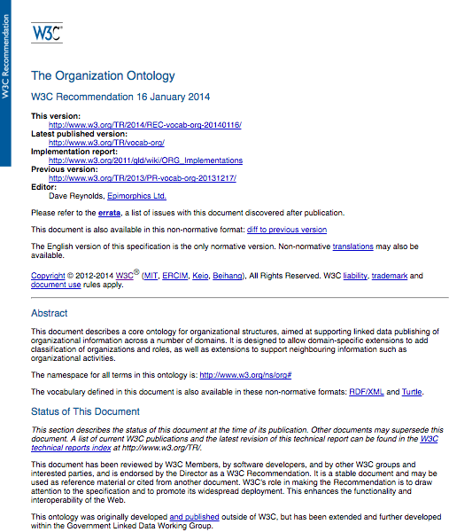

OpenTrack: Licenses and privacy
What is W3C
- World Wide Web Consortium
- neutral world-wide organization
- Founded in 1994 by Tim
Berners-Lee
Leading the Web to its full potential.
Who is W3C?
- +80 Team staff
- +400 Member organizations from all sectors and sizes
- Work is done by +1.500 researchers from those Member organizations within +70 working groups
Interest Groups
Look for the requirements and use cases in specific areas
- Digital Publishing
- HTML5 Chinese
- Internationalization
- Internationalization Tag Set (ITS)
- Patents and Standards
- Privacy
- Semantic Web Health Care and Life Sciences
- Semantic Web
- Social
- Web Accessibility Initiative
- Web and TV
- Web of Things
- Web Payments
- Web Security
- all
Working Groups
Development of standards
- Accessible Platform Architectures
- Accessible Rich Internet Applications
- Audio
- Automotive
- Browser Testing and Tools
- Cascading Style Sheets (CSS)
- Data on the Web Best Practices
- Device and Sensors
- Education and Outreach
- Efficient XML Interchange
- Evaluation and Repair Tools
- Geolocation
- HTML Media Extensions
- Internationalization
- Multimodal Interaction
- Permissions and Obligations Expression
- Pointer Events
- RDF Data Shapes
- Second Screen Presentation
- Social Web
- Spatial Data on the Web
- SVG
- Timed Text
- Tracking Protection
- TV Control
- Web Annotation
- Web Application Security
- Web Authentication
- Web Content Accessibility Guidelines
- Web Cryptography
- Web Payments
- Web Performance
- Web Platform
- Web Real-Time Communications
- WebFonts
- XML Core
- XML Processing Model
- XML Query
- XML Security
- XSLT
- all
Community Groups
Incubation Stage
- Everyone can propose/join
- Not part of the official standardization process
- May develop specifications/reports
- all
Development of vocabularies
- W3C Members can submit proposals
- Documents under the W3C.org domain

Questions?

Martín Álvarez (@espinr)


{kind=link}